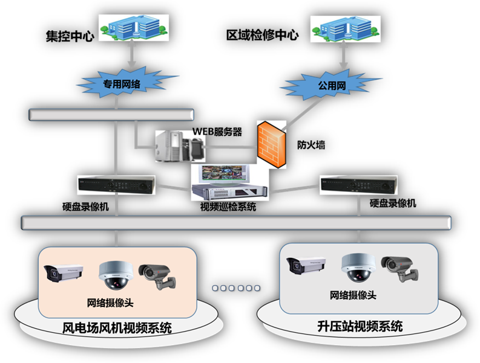
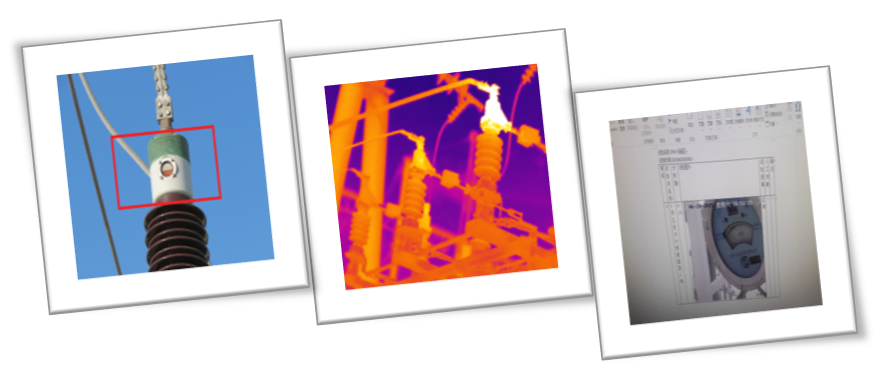

2018-01-19解决方案与产品
基于人工智能的风电场视频巡检系统采用升压站、风机摄像头采集视频图像，通过人工智能识别、视频轮巡、多视频拼接的方式进行视频就地分析，减轻集控视频处理压力，分析结果远距离传输到上一级集控中心供设备运维人员决策使用。同时区域检修中心通过WEB浏览的方式对场内视频巡检系统进行访问操作。
风电场视频巡检系统可以代替人工巡检传统作业模式，实现风电场巡检的规范化和智能化，保证设备长期高效稳定运行。
风电场视频巡检系统子系统综合利用了视频、人工智能、图像识别等先进技术，系统将风机和升压站的视频集中整合，设备主要包含风电场、升压站安装的摄像头、网络存储、连接、安防设备等。风电场视频巡检系统结构如图所示：

图1：风电场视频巡检系统结构图
1.实时在线图像识别：系统可以对设备及运行环境进行实时监控，并对升压站变压器漏油、引下线跌落、异物缠绕、油位异常、故障指示灯等设备异常进行主动识别，推送异常图片给运维人员，做到无人值守的升压站设备异常早发现、早知道。
2.红外热成像测温预警：对变压器、母线、互感器等设备主导流部位、引线夹进行的红外热成像实时监测，并与同组其他相别的监测数据进行对比分析，对异常状态及时预告警，生成分析报告推送至设备运维人员
3.智能设备巡检：按照人工巡检路线可定时将顺序联动的摄像头的视频重新组合，形成整体设备视频录像，可模拟人工定时巡检、特殊巡检等巡检方式，巡检结果以报表及录像的方式呈现给用户。
4.智能安防巡检：可定时对升压站、风机设备运行环境进行巡检，系统可以实时监测非法入侵自动报警。对移动对象自动跟踪、抓拍、可自动报警。

图2：油位智能识别 图3：红外热成像测温 图4：巡检报表
1.对无人值守升压站、风发电场设备自动巡检，代替人工，节约人力物力；
2.减少运维人员监盘压力，设备异常自动识别，自动上报；
3.针对设备实时巡检，最大限度减少漏检、错检，提高巡检作业的质量和效率。
4.提供巡检报表及整体巡检录像，减少事务性工作；
5.红外在线实时测温代替人工测温枪测温，解决人工测温实时性差问题。
6.相比机器人巡检不受路线和天气充电等问题影响，实用性强。
四方股份为您提供优质的解决方案
如有任何问题，请与我们联系
邮箱：shijianhua@sf-auto.com
电话：18515512819/010-82182205
基于人工智能的风电场视频巡检系统通过人工智能识别、视频轮巡、多视频拼接等技术对风电场及升压站现场采集视频进行处理分析，分析结果上传到上一级调度供运维人员决策使用。可代替人工巡检传统作业模式，解决无人值守风电场设备及安防巡检问题。